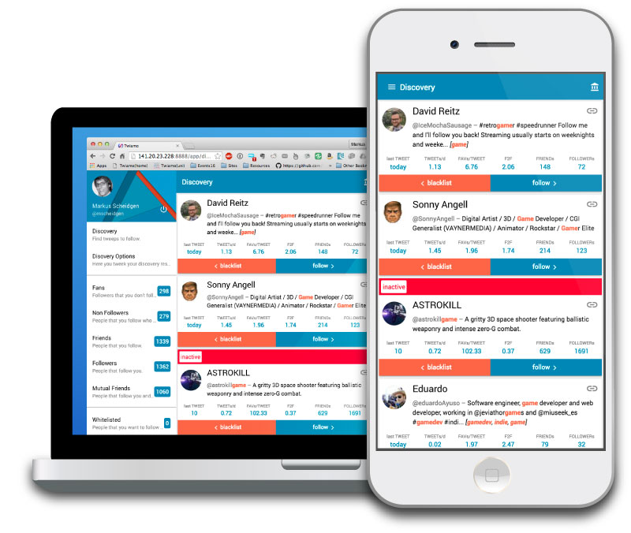
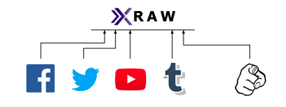
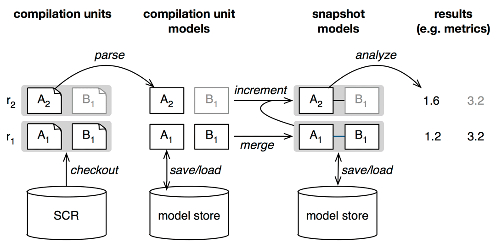
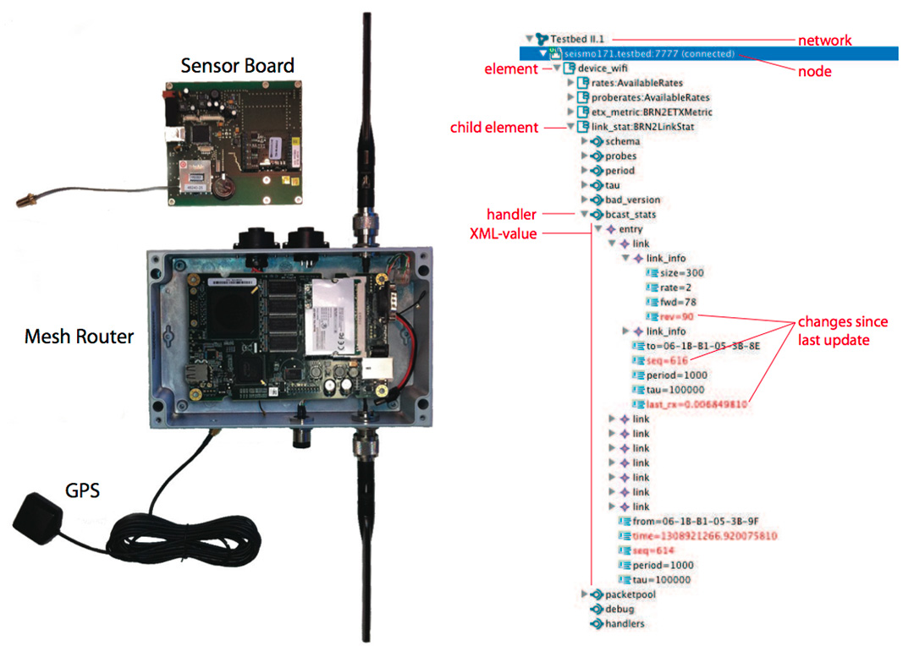

Twiamo is a friendship management app for Twitter. It uses metrics and keywords that allow users to quickly assess the value of other Twitter users.
Twiamo is build as a progressive web-app; a mobile-first application that feels and behaves like a native mobile app, but does not require installation or updates.

Java, GWT, App Engine, Cloud Storage, Javascript, Web Components, Polymer, Twitter API, REST
XRAW is a programming framework that allows to use any existing REST API within a JVM environment in a type-safe manner. It uses active annotations to alter the semantics of Java classes and fields to represent remote resources as if they were local data.
Twiamo comes with small excerpts of the APIs for the larger social networks Twitter, Facebook, YouTube, and Tumblr. It can easily be extended by defining types for requests and resources of more existing APIs or to create type-safe client libraries for APIs build from scratch.

XRAW is compatible with GWT and can be used for web app clients, Android, or regular desktop apps. It is open source and distributed as a maven module.
Java, Xtend, JSON, REST, Twitter, Facebook, Youtube, Tumblr, Maven
Smartphone apps and app stores are probably one of the most distruptive things in the last decade that any programmer has to try build for. I experimented with a variety of platforms and technologies. I developed and published apps and games for both iOS and Android.
LibGDX, Unity, Java, C#, Android, iOS
Increasingly complex software systems, require increasingly complext software models. Large models are traditianlly managed with SQL database persistent layers. However, SQL databases do not scale enough or are otherwiese indadequate due to the graph-like nature of software models in certain application contexts.
EMF-Fragments [ ] is a NoSQL persistent layer for EMF models. With EMF-Fragments, I explored the scalebility properties of a fragmentation-based persistence that facilitates the nature of document databases like mongoDB.
Eclipse, EMF, Java, MongoDB, NoSQL
On application for these large software models is model-based mininig of source code repositories. SrcRepo [ ] uses reverse engineering to create large abstract syntax trees models of whole source code repositories comprising all branches and revisions of code.

Reverse Engineering, Java, Metrics, Data Mining, Statistics, Git
To explore big data more intuively visual analytics uses interactive visualizations that allow uses to unserstand the relationships within complex data-sets based on visual connections between different data representations.
I build a web-based data visualization framework on top of Angular2 and d3.js called d3ng [ ]. With D3ng clients can create complex visualizations from normal charts that show relationships via brushing and linking. Selections in one chart influence the representation of the selected data-points in other charts and connections are visualized via colors.
Try for yourself:
Angular2, node.js, D3.js, TypeScript
Domain specific languages (DSL) are computer languages that adhere to the specific conventions and vocabulary of a specific domain and therefore allow for more precise, more readable, and more accessible expression. I created the Textual Editing Framework (TEF) [ ] for dynamic languages that can extend and change their syntax in a running IDE.
Eclipse, EMF, Xtext, GMF, Domain Modeling
To research wireless sensor network applications for smart cities, we build the 300 sensor network HWL, and I created the model-based sensor network experimentation framework Clickwatch [ ] to experiment with it.

Eclipse, EMF, XML, Statistics, MongoDB, NoSQL, WIFI, Networks, Click